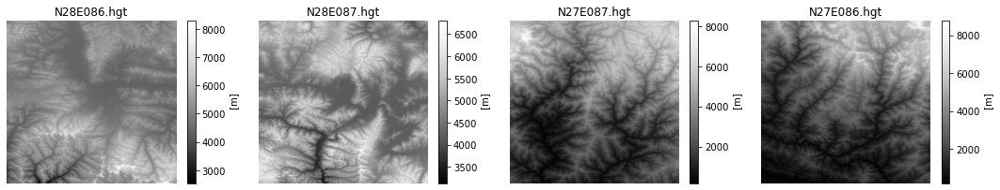
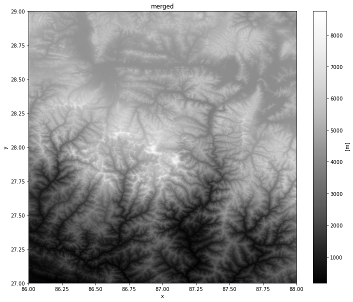

Xarray is an evolution of rasterio and is inspired by libraries like pandas to work with raster datasets. It is particularly suited for working with multi-dimensional time-series raster datasets. It also integrates tightly with dask that allows one to scale raster data processing using parallel computing.
rioxarray is an extension of xarray that makes it easy to work with geospatial rasters. You can install the rioxarray package from the conda-forge channel.
This notebook shows how we can replicate the analysis from the Working with RasterIO exercise and also covers raster data visualization using matplotlib.
We start by reading a single SRTM tile containing elevation values.
import os
data_pkg_path = 'data'
srtm_dir = 'srtm'
filename = 'N28E087.hgt'
path = os.path.join(data_pkg_path, srtm_dir, filename)By convention, rioxarray is imported as rxr
import rioxarray as rxrThe open_rasterio() method is able to read any data source supported by rasterio library.
rds = rxr.open_rasterio(path)The result is a xarray.DataArray object.
type(rds)xarray.core.dataarray.DataArrayYou can access the pixel values using the values property which returns the array’s data as a numpy array.
rds.valuesarray([[[5217, 5211, 5208, ..., 5097, 5098, 5089],
[5206, 5201, 5200, ..., 5080, 5075, 5069],
[5199, 5194, 5191, ..., 5063, 5055, 5048],
...,
[5347, 5345, 5343, ..., 5747, 5750, 5757],
[5338, 5338, 5336, ..., 5737, 5740, 5747],
[5332, 5331, 5332, ..., 5734, 5736, 5744]]], dtype=int16)A xarray.DataArray object also contains 1 or more coordinates. Each corrdinate is a 1-dimensional array representing values along one of the data axes. In case of the 1-band SRTM elevation data, we have 3 coordinates - x, y and band.
rds.coordsCoordinates:
* band (band) int64 1
* x (x) float64 87.0 87.0 87.0 87.0 87.0 ... 88.0 88.0 88.0 88.0
* y (y) float64 29.0 29.0 29.0 29.0 29.0 ... 28.0 28.0 28.0 28.0
spatial_ref int64 0A key feature of xarray is the ability to access slices of the dataset using index lookup methods. For example, we can slice the main dataset and get the data for Band1 using the sel() method.
band1 = rds.sel(band=1)The raster metadata is stored in the rio accessor. This is enabled by the rioxarray library which provides geospatial functions on top of xarray.
print('CRS:', rds.rio.crs)
print('Resolution:', rds.rio.resolution())
print('Bounds:', rds.rio.bounds())
print('Width:', rds.rio.width)
print('Height:', rds.rio.height)CRS: EPSG:4326
Resolution: (0.0002777777777777778, -0.0002777777777777778)
Bounds: (86.99986111111112, 27.999861111111112, 88.00013888888888, 29.000138888888888)
Width: 3601
Height: 3601Now that you understand the basic data structure of xarray and the &rio* extension, let’s use it to process some data. We will take 4 individual SRTM tiles and merge them to a single GeoTiff. You will note that rioxarray handles the CRS and transform much better - taking care of internal details and providing a simple API.
Remember to always import
rioxarrayeven if you are using sub-modules. Importingrioxarrayactivates therioaccessor which is required for all operations.
import rioxarray as rxr
from rioxarray.merge import merge_arraysDefine input and output paths.
srtm_path = os.path.join(data_pkg_path, 'srtm')
all_files = os.listdir(srtm_path)
output_filename = 'merged.tif'
output_dir = 'output'
output_path = os.path.join(output_dir, output_filename)Open each source file using open_rasterio() method and store the resulting datasets in a list.
datasets = []
for file in all_files:
path = os.path.join(srtm_path, file)
datasets.append(rxr.open_rasterio(path))Use the merge_arrays() method from the rioxarray.merge module to merge the rasters.
merged = merge_arrays(datasets)Finally, save the merged array to disk as a GeoTiff file.
merged.rio.to_raster(output_path)xarray plotting functionality is built on top of the the popular matplotlib library.
%matplotlib inline
import matplotlib.pyplot as pltYou cna visualize any DataArray object by calling plot() method. Here we create a row of 4 plots and render each of the source SRTM rasters. We can use the cmap option to specify a color ramp. Here we are using the built-in Greys ramp. Appending **_r** gives us the inverted ramp with blacks representing lower elevation values.
fig, axes = plt.subplots(1, 4)
fig.set_size_inches(15,3)
plt.tight_layout()
for index, dataset in enumerate(datasets):
ax = axes[index]
dataset.plot(ax=ax, cmap='Greys_r')
ax.axis('off')
filename = all_files[index]
ax.set_title(filename)
Similarly, we can visualize the merged raster.
fig, ax = plt.subplots()
fig.set_size_inches(12, 10)
merged.plot(ax=ax, cmap='Greys_r')
ax.set_title('merged')
plt.show()